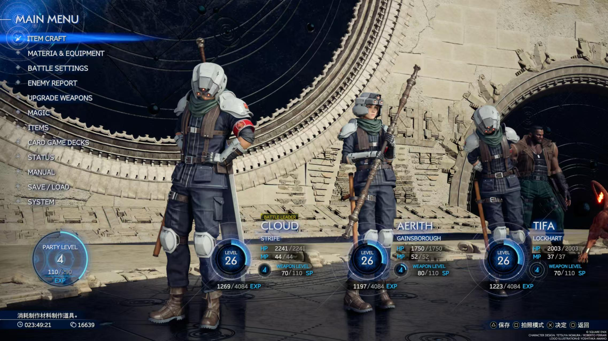

《最终幻想7：重生》体验分享
《最终幻想7：重生》是我 2024 年最期待的游戏之一。由于发售时还没有 PS5，加上考研复试等事务缠身，没能第一时间体验。后来，后面为了剧情体验的连贯性，我又重温了一遍四年前的《最终幻想7：重制版》，直到最近两个月才正式开坑。
历经 87 小时通关一周目后，内心感慨万千，不吐不快，于是便有了这篇体验分享。整体而言，《最终幻想7：重生》无愧于我 2024 年的年度游戏，甚至在 jrpg 品类中几乎稳坐我心中的头把交椅。但它并非完美，其中仍有一些让我不太满意或感到遗憾的地方，接下来便一一细说。
提示：本文存在剧透内容。
广阔，未必自由
相较于重制版第一作，《重生》最大的进化便是引入了一个可供探索的大地图。但请注意，尽管游戏的地图很大，我却很难称之为“开放世界”。实际上，游戏并未表现出什么构建一个生动、真实的奇幻世界的意图，而是通过一个个清单项来构成世界。而这势必会导致游戏体验上的重复，制作组为了缓解这种枯燥感，尽可能地在这些重复的清单项中引入了差异化设计。例如，同样是捕获陆行鸟，不同地区有不同的解决方式，这些在一定程度上确实减轻了重复感。
支线任务方面，相比上一作，《重生》有了显著的变化：每个支线任务与队伍中的某个角色相关，完成后可以提升该角色的好感度（与后期金蝶游乐园事件的触发相关），任务的完成情况有两档，完美完成时好感度的提升会更多（推测，未求证）。这其实也表明，《重生》的支线任务和一众美式 RPG 为了描绘世界不同，更专注于塑造队伍中角色的人物性格，强化主角克劳德与队友之间的羁绊。以这样一个视角来审视《重生》的支线任务，个人认为表现的还算不错。

在前期，剧情还未展开时，这样的清单项世界体验还算不错。但到了中后期，主线剧情逐渐变得更吸引人的情况下，游戏却频繁地向玩家抛出新的可探索区域，让游玩体验变得略显疲惫。我印象中这个问题最明显的区域便是星陨峡谷和尼泊尔海姆这一段，一是它们是游戏最后解锁的两个区域，玩家此时已经疲于探索，另外，这部分的主线剧情比较紧凑，很多人可能不愿停下来清理这些清单项。虽说清单项并非一定得做，但是之前没有提到的是，《重生》的清单项世界其实很大程度上是奖励驱动的，探索的收益十分丰厚，尤其是召唤兽的弱化和装备设计图纸，这些与游戏的核心玩法——战斗系统息息相关。因此，就算不为了清单项本身的游玩乐趣，冲着角色 build 强度去也很难不做。
至于社区中普遍诟病的小游戏和地图设计，我个人反倒体验还好。首先是小游戏，因为个人暂时也不追求白金，所以这部分感觉还算良好，大部分主线或支线中的小游戏若只是想通过基本上尝试一两次也就差不多了，也能起到一定调剂游戏节奏的作用。而像一些比较繁琐且耗时较长的，比如前往太阳海岸途中的女皇之血大赛，游戏也提供了直接跳过的选项（虽然个人并没有跳过）。而关于地图设计，在我看来问题主要源于 SE 的技术力限制，角色与场景间的交互体验相比同类型游戏来说比较糟糕：陆行鸟手感较差，角色攀爬和推箱子等动作十分缓慢且僵硬，还有一些反直觉的空气墙等等…… 而箱庭地图的结构设计本身，个人认为还是可圈可点的，不算优秀，但也在及格线以上的水平。
指令与动作的交响曲
在《最终幻想7：重制版》中，相较于原作，战斗系统迎来了巨大的革新——它以 ATB 指令为核心，同时融入了一定的动作性。我当时便对这套系统十分喜爱，并给予了很高的评价。此次重温，更让我再次体会到其设计的精妙之处，但也确实发现了一些不够成熟的地方。
首先是对于空中敌人的应对，可以说体验很糟糕。克劳德、蒂法等近战角色无法在空中打出连段，要想比较高效地进行输出，往往只能依赖于魔法，这很大程度上限制了战斗系统的发挥空间。其次，动作与指令的边界感比较模糊。具体来说，游戏中有很多敌人招式非常反直觉，有些招式看似能躲开，其实是指令锁定；而有些招式则更具动作性，基本所见即所得。这种边界的不清晰，让战斗在某些时刻显得不够流畅。
而要解决上述问题，我认为最好的方法便是明确动作和指令的界限——要么进一步强化动作性，使战斗更加流畅；要么让系统更偏向指令式，突出策略性。而从最终的呈现效果来看，制作组显然选择了前者。《重生》的战斗系统上手的第一感觉便是爽快。近战角色现在引入了空中连段，原本需要装备特定魔石才能解锁的范围普攻，在这一作中成为了默认能力，而克劳德甚至新增了远程普通攻击和快速近身突进。这些改动极大提升了战斗的流畅度，并显著加快了节奏。除此以外，游戏还引入了动作游戏中常见的完美防御机制，不仅让战斗系统的上限进一步提高，也极大改善了原本模糊的指令与动作边界。如今，大部分的敌人攻击都可以依靠闪避或完美防御来化解，战斗手感更加顺畅。值得一提的是，《重生》的完美防御在（被）打击反馈上做的很好，一旦触发，正反馈极强。

联手技算是一个全新的机制，它相当于给战斗系统引入了另外一个维度的资源，给战斗增添了更多的不确定性。在本作的战斗体系下，全员低血量且无 ATB 积攒的情况是十分危险的，玩家要想恢复生命值，就必须向敌人发起攻击以累积 ATB，而在低血量的情况下贸然攻击敌人又很可能导致角色死亡，让战斗局势更加难以挽回，而联手技配合原有的极限技，让玩家在这种情况下多了一份逆风翻盘的可能性。制作组可能是为了尽可能强化这种体验，这一作的战斗明显节奏上更快，而且也更加危险，Normal 难度在同类游戏中绝对算不上低，我数不清有多少次，在全员生命值告急的情况下，坚持一顿连续输出，将 boss 一波带走。这样的战斗体验，可谓十分美妙。
有关战斗这部分我也没法聊的太多，因为我短短 87 小时的游戏时长，也不太可能把《重生》的战斗玩得很明白。实际上，我玩得算是比较草率，7 个可控角色中，除却强制配队的情况，我基本全程都是克劳德、蒂法和爱丽丝的组合，魔晶石搭配、装备、魔导书等系统也基本只仔细研究了他们三人。但即便如此，综合战斗的乐趣和深度而言，《重生》的这套既复古又现代的战斗系统，也足以在我玩过的 jrpg 中位居第一。
演出如诗，旋律如泣
《重生》的画面表现，是让我比较感到比较失望的点，尤其是在引入了大地图之后，暴露了诸多技术性的问题。
首先是光影，前作的光影效果给我留下了很深刻的印象，可以说在当时来讲非常出色，尤其是游戏序章炸毁魔晄炉的任务中，光影层次丰富，氛围营造极为出色。要知道，我当时可是在一台性能已经被如今的旗舰手机赶超的 PS4 Slim 上游玩的。但在《重生》中，虽然固定的室内场景还算比较出色，但一旦涉及到室内外切换，光影调整往往迟滞数秒，甚至从室内看向室外，时常出现过曝现象，出口处白茫茫的一片什么也看不见，体验十分糟糕。此外，在非 Pro 版 PS5 上，性能模式（60 FPS）下画面呈现非常模糊，但根据数毛社 Digital Foundry 的评测，该模式下实际的渲染分辨率并不低，大约在 1100p 上下浮动，貌似是没有用上现代的超分辨率技术的缘故，使得画面观感很差。为了更好地体验故事，我后面还是选择全程开着画面模式（30 FPS）来游玩，至少在这个模式下，综合画面质量相比上一作还是有显著进步的。
虽然画面硬素质很一般，但是场景美术依然可圈可点。尤其是第一张大地图——格拉斯兰地区，场景色调以浅色系为主，营造出极为舒适的视觉观感，这种风格很像另一个我很喜欢的 jrpg ——《最终幻想 15》，其温暖而富有生机的奇幻色彩，正是我心目中理想的日式奇幻世界该有的样子。

要说起《最终幻想》这个 IP 所最不容妥协的，玩家也最不用担心搞砸的是什么，恐怕大部分人都会给出同一个答案，那就是音画表现，更具体来说——演出与音乐。《最终幻想》系列对演出效果的追求是十分偏执的，在如今这个即时演算动画效果已经非常出色，绝大部分游戏厂商都完全放弃了采用预渲染 CG 的情况下，《最终幻想》依然执着地在关键剧情中插入 CG 过场，用以将某些场景的表现力推至极致。这种对演出的极端追求，或许正是《最终幻想》系列的“基因”吧。而本作亦是如此，奉献了很多注定会在系列历史上，乃至整个电子游戏史上留下浓墨重彩一笔的精彩演出。
《重生》在音乐上交出的答卷也是十分令人满意的，游戏在每张大地图都配备了探索与战斗两套不同编曲的配乐，以便在游玩过程中无缝切换。再结合前面提到的优秀场景美术，使得游戏的清单项清理过程变得不再那么枯燥，至少在前期，体验可以说相当出色。音乐上的“铺张浪费”也是显而易见的，游戏中有很多根本无关紧要的支线任务，甚至是小游戏，都配备了专属 BGM。我脑海中立马能浮现的例子，就有一个青蛙跳台小游戏和一个护送狗的支线任务，当时玩到可谓是大受震撼。
音乐在关键情节的演绎也是极其出色的，《重生》这一部剧情的绝对核心是爱丽丝，因为终章大概率没有多少她的戏份了，因此这一作花了大量的篇幅对她进行塑造，希望给这个角色一个完美的“退场仪式”。这一点从音乐上也能看出来，《重生》这一作编写了大量爱丽丝主题曲的不同变奏版本，分别在各个与之相关的情节播放，比如星陨峡谷的送星仪式，还有古代种神殿中爱丽丝的幼年回忆等，甚至本作的主题曲——《No promises to keep》都是为她量身打造，并奉上了一段极其精彩的演出。这些铺垫在最终章时得到爆发，爱丽丝之死，以及随后紧接的 boss 战，音乐的情绪渲染堪称教科书级别，将玩家的情绪推向极致。
命运交错，情感升华
在开坑《重生》前，我特地花了 30 多小时重温了四年前的重制版一代。在称赞前作优秀战斗系统的同时，也感受到一些叙事上存在的问题，而《重生》这一代甚至将这些问题进一步放大。
直观感受就是部分情节的呈现显得突兀甚至略显尴尬。个人总结其中一个很大的原因是重制所带来的：97 年原版的《最终幻想 7》虽在当前感动了无数玩家，但在那个 3d 技术尚未成熟的年代，除 CG 过场外，角色的剧情演出基本都是由 q 版小人以较为抽象的方式来表现。如今，制作组试图将这些情节用现代图形技术加持的影视化方式进行重塑，难免会感到很不协调。虽然制作组已经为此优化了很多，但问题依然存在。另外，可能是为了提升游戏体验的丰富度，在我看来 gameplay 在本作中应当占据了较大的话语权，很多不太合理的故事情节实际上是为了引出一些小游戏供玩家体验，而这其中很大一部分其实是原作就有的。
但是尽管如此，《重生》剧情体验的优点也完美继承自上一作，并且同样也得到了提升，那就是人物塑造和细腻的情感刻画。《最终幻想 7》的重制三部曲（虽说最后一部还没出）之所以能做好这部分，其实很大程度上也是因为重制的缘故，当原版可能几个小时的流程被扩展成为一个三四十小时的完整体量游戏时，角色一些可能无关紧要的行为就能有充足的空间被细致刻画。而这些被塑造的十分丰满、富有魅力的角色，也正是我喜欢《最终幻想 7》的原因，同时也是我如此在意它后续故事发展的原因。这一次开坑《重生》的过程，就像是与阔别数年的老朋友重逢，主角团之间产生的一些有趣的互动，为整个冒险旅程注入了独特的温度，很大程度上掩盖了上面提到的一些情节上的瑕疵。仔细想想，这大概也是我热爱 jrpg 的原因吧。
最后，我想好好聊聊《重生》最后的结局。这个结局带给我的感受是十分复杂的。
首先，不考虑制作组真正想整的大活，仅从观感来看，情节的演绎方式让我一度感到诧异，甚至是愤怒，这部分最突出的地方莫过于大 boss——萨菲罗斯的各种演出。若要问我《重生》中最讨厌的角色，那非萨菲罗斯莫属了。这个角色在情节中的插入，几乎充斥着整部游戏，虽说这与原版《最终幻想 7》故事精华之一——主角克劳德过去的经历密切相关，但在我看来制作组显然没有把控好这个度，让我感到厌烦，尤其在结局处更加放大了这一感受。
但是另一方面，原版《最终幻想 7》最令人印象深刻的情节——爱丽丝之死使用了一种完全不一样的方式来呈现，这部分的呈现效果非常因人而异。在我的观察下，不同人对剧情的理解不同，可能会得到截然不同的感受。而在我的理解下，至少是我当时得出的结论来说：爱丽丝之死的结果并没有被改变。因此这段情节对我的情感冲击很大，随后的 boss 战更是将整段演出进行升华，杰诺瓦 boss 战的音乐与爱丽丝的主题曲相互交织，带给我近两年从游戏中收获的最大的感动。
关于我得出爱丽丝之死没有被改变的结论的原因，一方面是此前采访中制作人滨口直树提到的“一些关键角色的死亡不会被改变，而会以另一种方式来呈现”；另一方面是其实更多的是直觉——或许是我的期待，或许是我的理解。
而在其他一些玩家的体验中，可能得出爱丽丝的结局将被改变，或是还处在对前面引入的平行宇宙设定感到迷惑的阶段，在这一刻下理性思维盖过了感性思维，因此情感并没有被成功调动。因此，结局所带来的冲击力因人而异，或感动，或困惑，或不满。
至于结局处留下的更多伏笔，网上的讨论有很多，我也对参与其中也并无兴趣，只希望制作组妥善处理，在终章尽可能将这些坑填上，给这场历经数年的冒险旅途画上一个圆满的句号。
现在的我，已经无比期待终章的发售，不出意外，它应该是我 27 年最期待的游戏了（立个 flag，希望 27 年能出 😭）。
 微信
微信 支付宝
支付宝